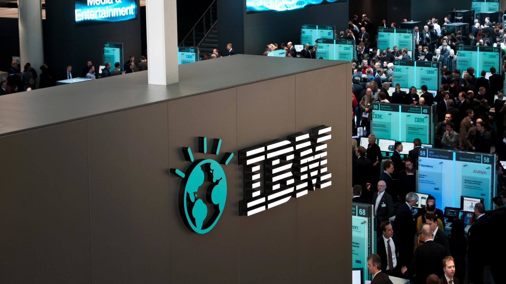

IBM

IBM (International Business Machines) ranks among the world's largest information technology companies, providing a wide spectrum of hardware, software and services offerings.
- Industry:
Automation,
Robotics,
Artificial intelligence,Cloud computing
- Customer service:
Outsourcing,Professional services, Managed services
- Stock price: MSFT (NASDAQ) $252.99 -11.80 (-4.46%)
- Founded: June 16, 1911; 110 years ago
- Area served: 177 countries[2]
- Headquarters: Armonk, New York, U.S.
- Founder: Charles Ranlett Flint
- Chairman & Ceo: Arvind Krishna
- Revenue Increase: US$57.35 billion (2021)
- Operating income: US$6.86 billion (2021)
- Net income: Increase US$5.74 billion (2021)
- Total assets: Decrease US$132.00 billion (2021)
- Total equity: Decrease US$18.99 billion (2021)
What IBM is known for?
IBM is best known for producing and selling computer hardware and software, as well as cloud computing and data analytics. The company has also served as a major research and development corporation over the years, with significant inventions like the floppy disk, the hard disk drive, and the UPC barcode.
What is the main purpose of IBM?
IBM's corporate mission is “to lead in the creation, development and manufacture of the industry's most advanced information technologies, including computer systems, software, networking systems, storage devices and microelectronics.
IBM Services
- IBM Consulting
- IBM Cloud
- IBM Research
- WebSphere Application Server (WAS)
- IBM Secure Service Container
- IBM Simon
- IBM AIX
- IBM Z
- IBM 1401